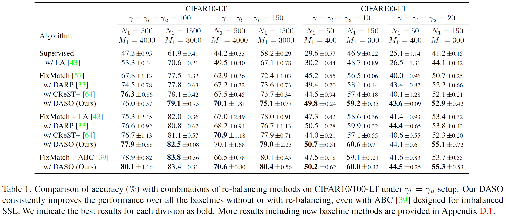
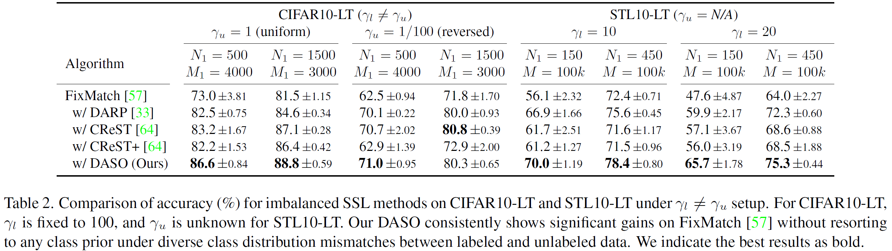

The capability of the traditional semi-supervised learning (SSL) methods is far from real-world application due to severely biased pseudo-labels caused by (1) class imbalance and (2) class distribution mismatch between labeled and unlabeled data.
This paper addresses such a relatively under-explored problem. First, we propose a general pseudo-labeling framework that class-adaptively blends the semantic pseudo-label from a similarity-based classifier to the linear one from the linear classifier, after making the observation that both types of pseudo-labels have complementary properties in terms of bias. We further introduce a novel semantic alignment loss to establish balanced feature representation to reduce the biased predictions from the classifier. We term the whole framework as Distribution-Aware Semantics-Oriented (DASO) Pseudo-label.
We conduct extensive experiments in a wide range of imbalanced benchmarks: CIFAR10/100-LT, STL10-LT, and large-scale long-tailed Semi-Aves with open-set class, and demonstrate that, the proposed DASO framework reliably improves SSL learners with unlabeled data especially when both (1) class imbalance and (2) distribution mismatch dominate.
Many real-world datasets exhibit long-tailed distributions. With such class imbalanced data, semi-supervised learning (SSL) methods produce biased pseudo-labels, which can further bias the model during training. The bias of pseudo-labels also depends on class distribution mismatch between labeled and unlabeled data, in addition to the class-imbalance.
We present a new imbalanced SSL method for debiasing pseudo-labels under class-imbalanced data, while discarding the common assumption that class distributions of labeled data and unlabeled data are identical.
We observe that semantic pseudo-labels from a similarity-based classifier are biased towards minority classes as opposed to linear classifier-based pseudo-labels being biased towards head classes.
FixMatch and USADTM are recent methods that learn solely from linear pseudo-labels and semantic pseudo-labels, respectively.
Based on the observation, we exploit the linear and semantic pseudo-labels differently in different classes for debaising. For example, when linear pseudo-label points to the majorities, more semantic pseudo-label component contributes to the final pseudo-label to prevent false positives towards head classes, and the vice versa when the linear pseudo-label predicts minority.
We use the imbalanced versions of CIFAR-10/100 and STL-10 under diverse cases of imbalances in unlabeled data ($ \gamma_u \neq \gamma_l$), including the same imbalance with labeled data ($ \gamma_u = \gamma_l$).
We compare DASO with several baseline methods, with or without applying class re-balancing strategies such as LA and ABC.
The class distribution of unlabeled data could be either unknown or arguably different from that of labeled data in real-world. To simulate such scenarios, for CIFAR10-LT, uniform distributions ($ \gamma_u = 1$) and flipped long-tailed distribution with respect to labeled data ($ \gamma_u=1/100 $) are considered. For STL10-LT, we only control the degree of imbalance in labeled data ($ \gamma_l $) due to unknown distribution of unlabeled data.
For real-world scenarios, long-tailed Semi-Aves benchmark including large unlabeled open-set data is considered. Both labeled data ($ \mathcal{X} $) and unlabeled data ($ \mathcal{U} $) show long-tailed distributions, while $ \mathcal{U} $ contains large open-set class examples ($ \mathcal{U}_{\text{out}} $). We report the results on both cases: $ \mathcal{U} = \mathcal{U}_{\text{in}} $ and $ \mathcal{U} = \mathcal{U}_{\text{in}} + \mathcal{U}_{\text{out}} $.
We qualitatively analyze how DASO improves the performance under imbalanced SSL setup. We consider FixMatch as baseline trained on CIFAR10-LT under $ \gamma=100 $ and $ N_1 = 500 $.
DASO significantly improves the recall and test accuracy values on the minority classes, while preserving those from the majority classes.
Learning with DASO helps the model to establish tail-class clusters, which can further reduce the biases from the classifier.
There's a lot of excellent work that was introduced around the same time as ours.
CoSSL introduces a co-learning framework that decouples the learning of representation and classifier in imbalanced SSL.
DebiasMatch proposes a general debiased learning for pseudo-labels based on counterfactual reasoning and adaptive margins.
Spread Spurious Attribute (SSA) proposes a method of adaptive thresholds for pseudo-labeling that does not rely on the assumption: identical class distributions of labeled and unlabeled data (Secs. 4.2 and 5.4).
If you find our work useful for your research, please cite with the following bibtex:
@inproceedings{oh2022daso,
title={DASO: Distribution-Aware Semantics-Oriented Pseudo-label for Imbalanced Semi-Supervised Learning},
author={Oh, Youngtaek and Kim, Dong-Jin and Kweon, In So},
booktitle={Proceedings of the IEEE/CVF Conference on Computer Vision and Pattern Recognition (CVPR)},
year={2022},
pages={9786-9796}
}